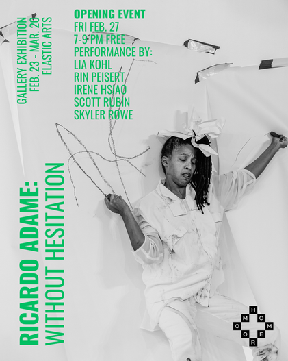

Ricardo Adame: Without Hesitation
Homeroom is excited to present an exhibition of work by prolific Chicago photographer Ricardo Adame. Without Hesitation runs from Feb 23 to Mar 20 and features Adame’s photography documenting various performances at Elastic Arts over the past several years, including Homeroom’s Residency series as well as many Elastic Arts programs including Hot Mess, Relative Intensity Noise, Freedom From Freedom To, Improvised Music Series, Elastro, and Jello.
Ricardo Adame “Without Hesitation” Gallery Exhibition
February 23 – March 20, 2026
Opening Event
Friday 27, 2026
7pm – 9pm. FREE
Featuring a performance by Lia Kohl, Rin Peisert, Irene Hsiao, Scott Rubin, and Skyler Rowe
Follow Ricardo’s work on Instagram